Návrh VR a prostorových aplikací, prostorové metafory, proces prototypování, klíčová odvětví a případové studie od pionýrů po moderní éru Spatial Computing.
Ve VR neexistuje jednoduchý rám monitoru. Rozhraní je součástí světa a každá nepřirozená mechanika okamžitě narušuje imerzi.
Napodobení rozhraní pomocí fyzických předmětů z reálného světa:
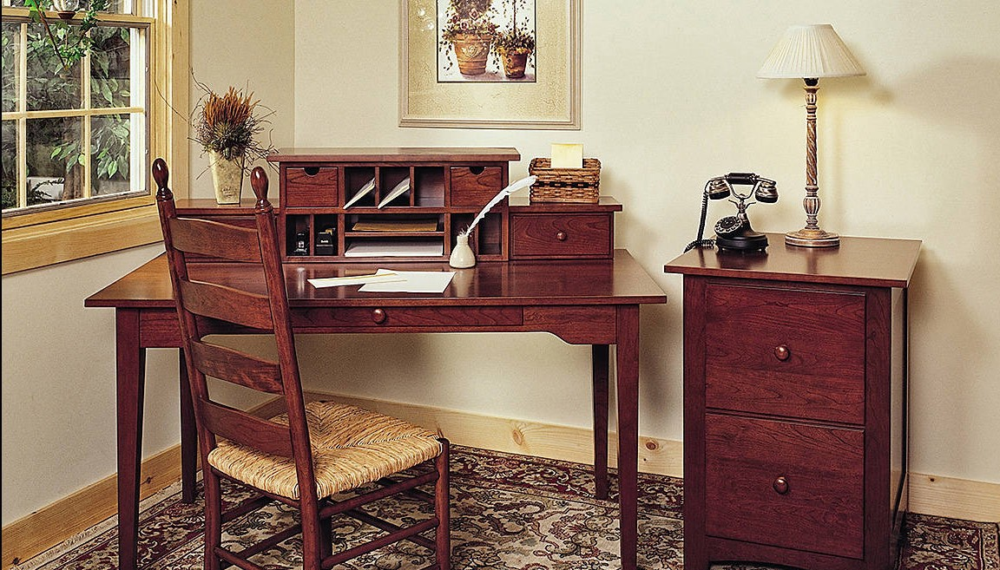
▶ Vlajková aplikace pro prostorový design, wireframing a storyboarding přímo uvnitř headsetu (využívána týmy v Meta, ByteDance/Pico, Qualcommu).
Plnohodnotný 3D a prostorový designový nástroj, který běží kompletně ve webovém prohlížeči bez nutnosti instalace specializovaného softwaru.
Zatímco herní enginy vyžadují znalost C# a složité pipeline, Bezel nabízí rozhraní s vrstvami a panely vlastností, které okamžitě chápe každý 2D webový designér.
Populární nástroj pro tvorbu dynamického 3D obsahu, animací a prostorových widgetů s přímým exportem pro moderní prostorové platformy.
<spline-viewer>.Plnohodnotné IDE nepatří do brýlí. V headsetu má probíhat pouze rychlý prostorový wireframing a ověření měřítka (ShapesXR). Detailní programování logiky a optimalizace zůstává na monitoru a klávesnici.
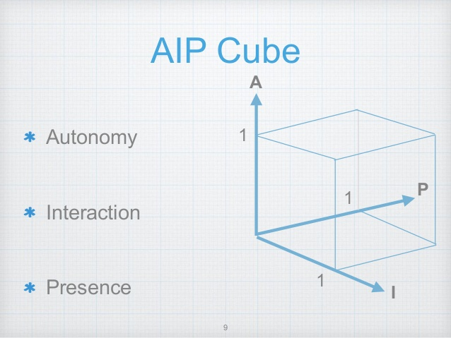
AIP model pomáhá vývojáři uvědomit si, v jaké dimenzi aplikace zaostává. Skvělá grafika (vysoké P) nezachrání aplikaci, pokud prostředí na nic nereaguje (nízké A) nebo uživatel nemůže nic ovlivnit (nízké I).
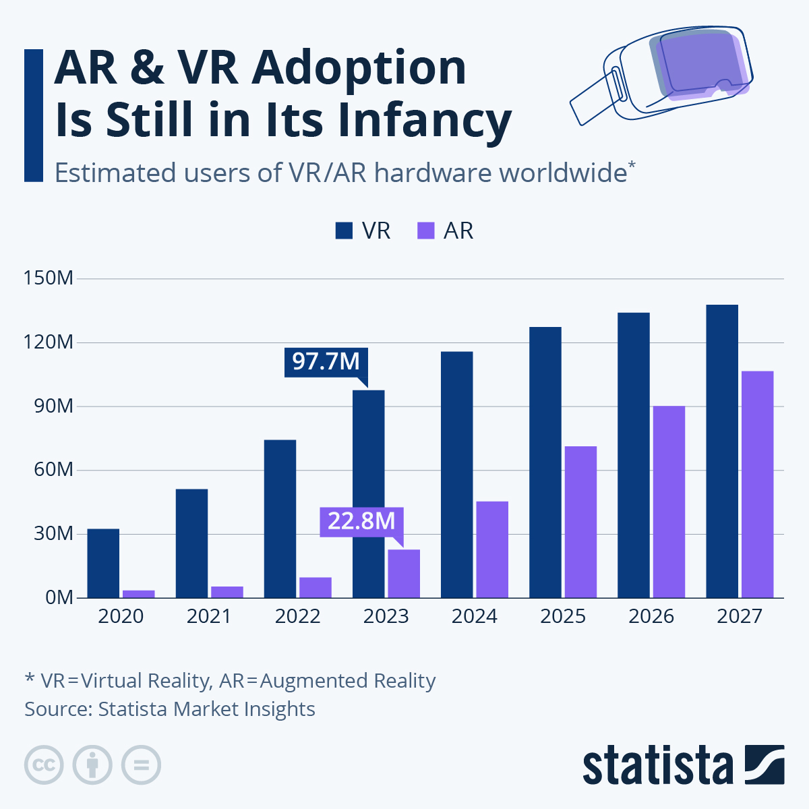
Hry jsou sice nejviditelnější, ale podnikový (enterprise) sektor tvoří nejstabilnější zdroj příjmů (vysoká ochota platit za licence a úsporu nákladů).
Více než 25 milionů samostatných headsetů na trhu (Meta Quest, Pico, Apple Vision Pro): dostatečná masa uživatelů, která přitahuje velké softwarové domy.
Nyní podrobně rozebereme konkrétní zástupce v pěti stěžejních kategoriích:
Namísto izolovaného hráče doma v pokoji sedí 25–30 žáků v jedné třídě a sdílí společný vizuální prostor, zatímco učitel funguje jako moderátor a průvodce.
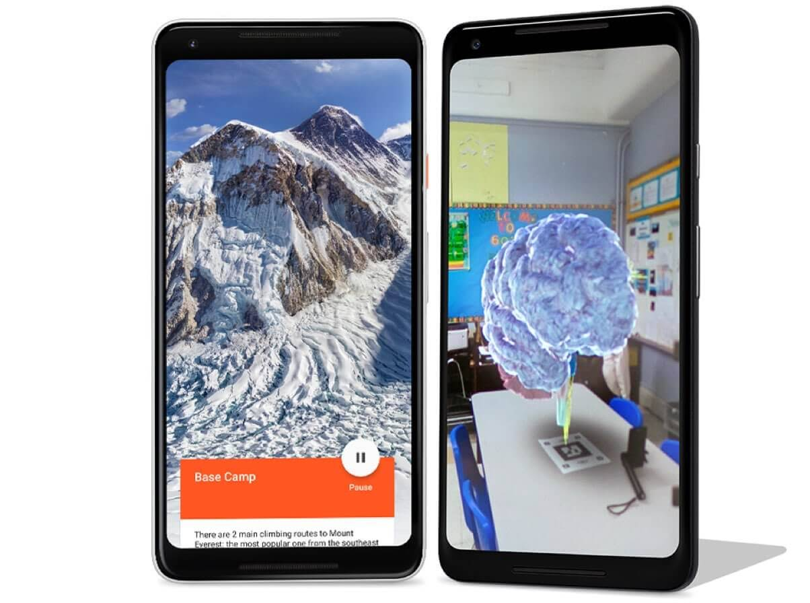
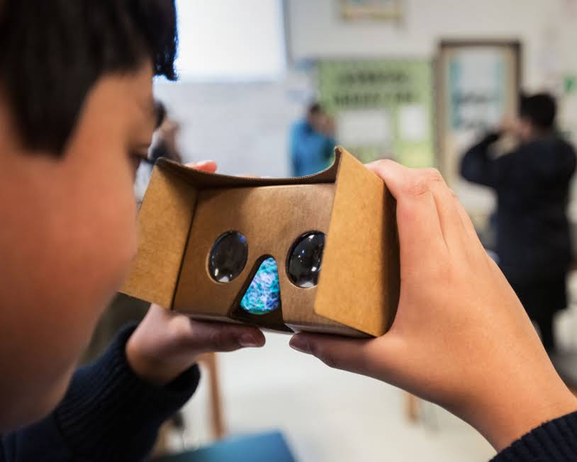
Využití extrémně levného držáku Google Cardboard z lepenky a čoček v kombinaci s běžným smartphonem žáka.
Děti z odlehlých či sociálně slabších škol mohly „navštívit“ Louvre, Buckinghamský palác nebo Velký bariérový útes bez jakýchkoliv cestovních nákladů.
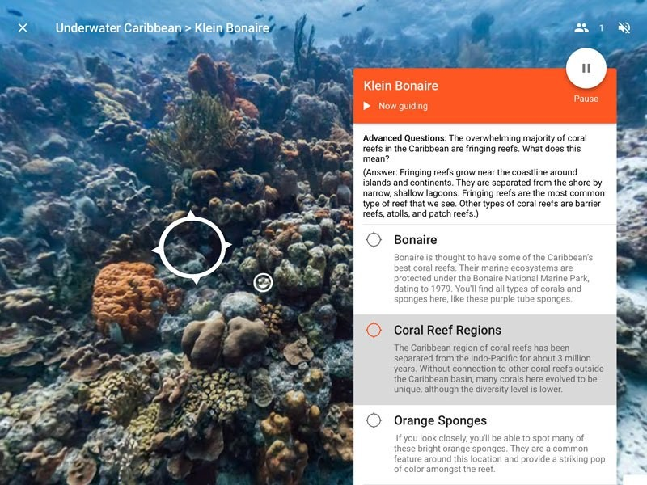
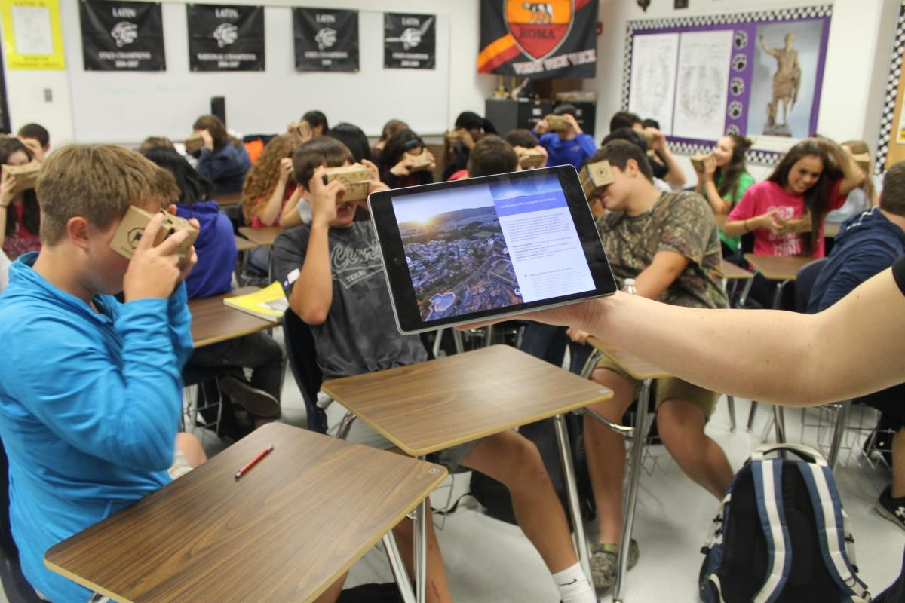
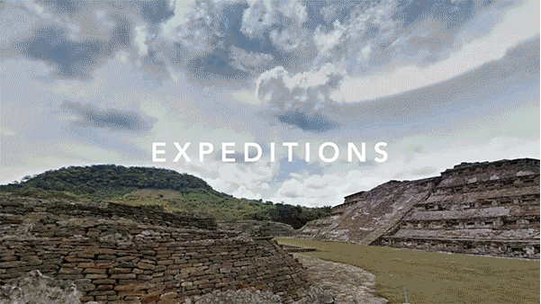
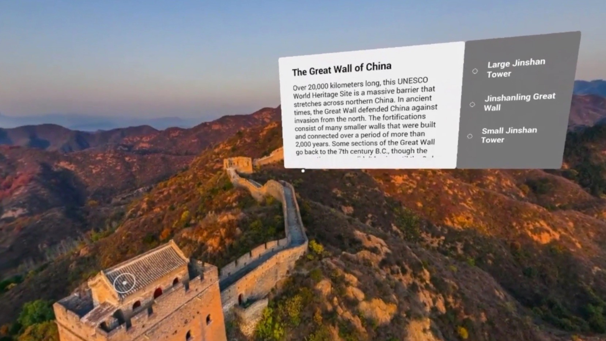
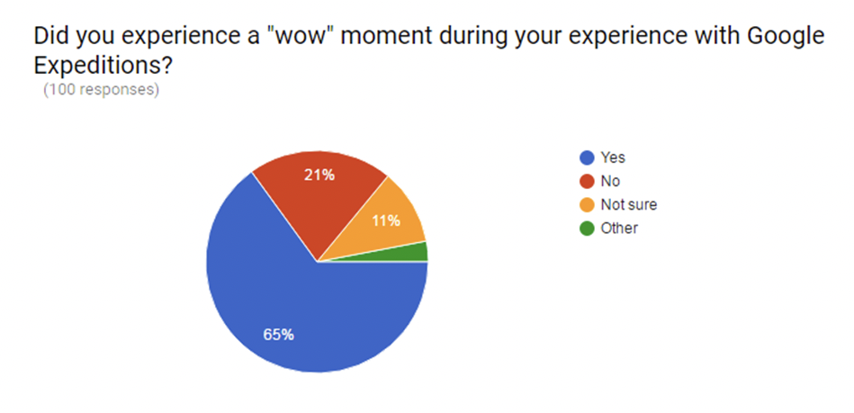
Výuka ve VR brýlích nesmí trvat celých 45 minut. Optimum je 10–15 minut jako imerzivní vsuvka v rámci klasického výkladu učitele. Google projekt Expeditions v roce 2021 oficiálně ukončil.
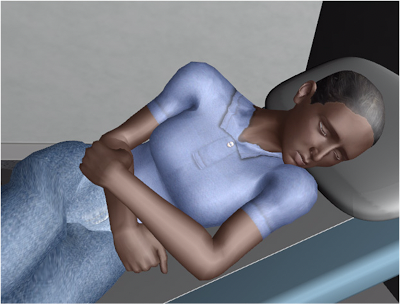
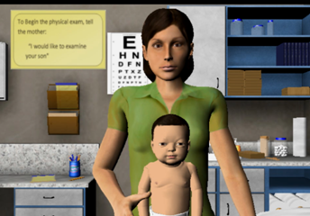
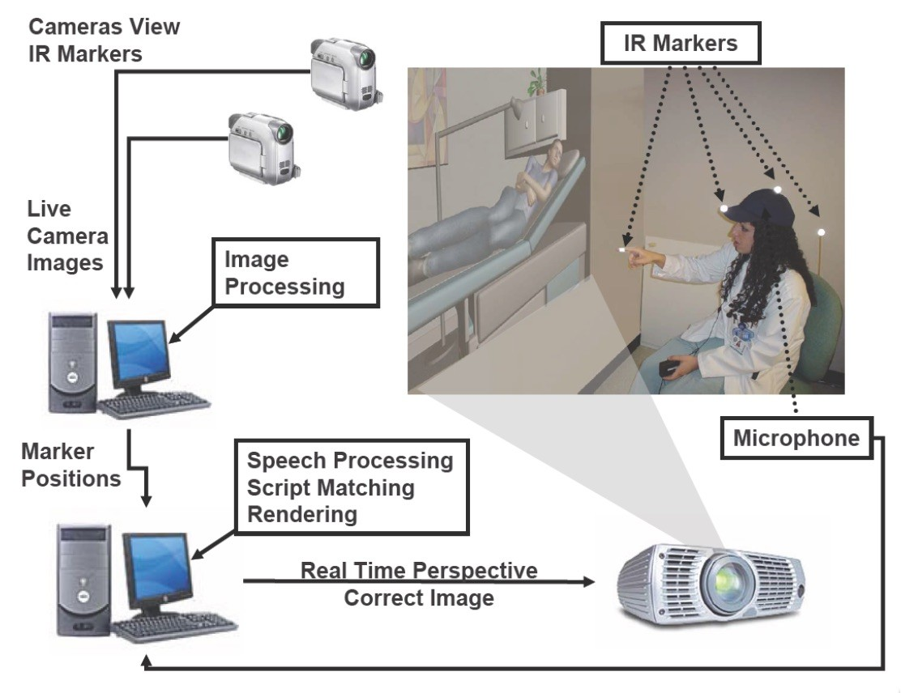
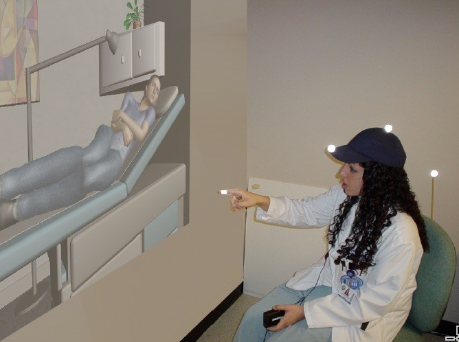
Postupy naučené ve VR se spolehlivě přenesly do reálného světa. Studenti trénovaní s virtuálními pacienty dosahovali v reálných nemocnicích prokazatelně přesnějších diagnóz a lepší komunikace.
Propojení špičkového příběhu (licence Lucasfilmu pro Star Wars) s fyzickým prostorem vytvořilo zcela nový žánr zážitkové zábavy.
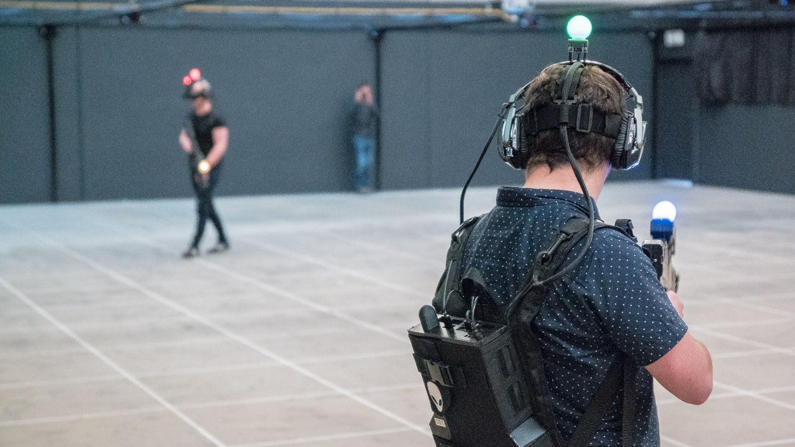
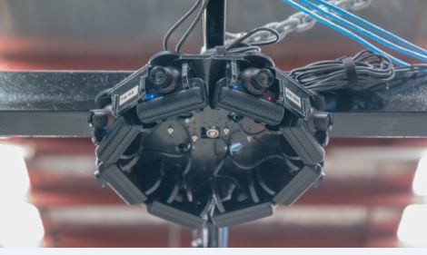
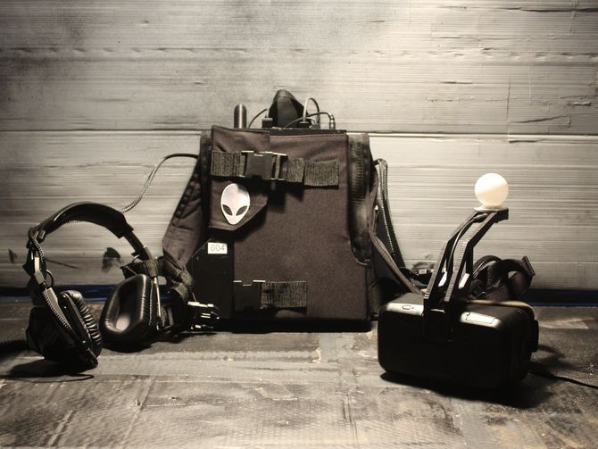
Tah štětcem není pouhá stopa pixelů ve 2D: je to prostorový 3D pás polygonů generovaný v reálném čase podél trajektorie ruky umělce.
Open Brush přidal podporu Passthrough (malování přímo v reálném pokoji) a multiplayer. Příbuzné špičkové nástroje: Adobe Substance 3D Modeler (modelování hmotou) a Vermillion (olejomalba na plátno).
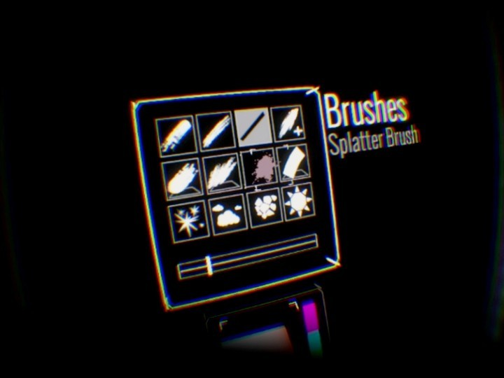
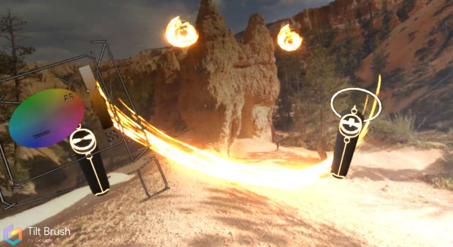
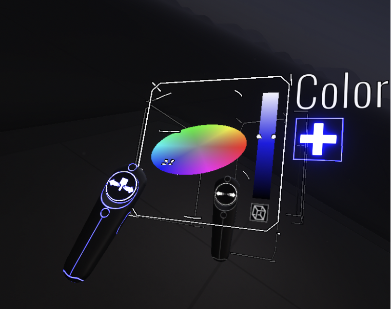
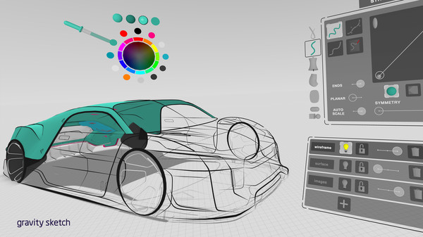
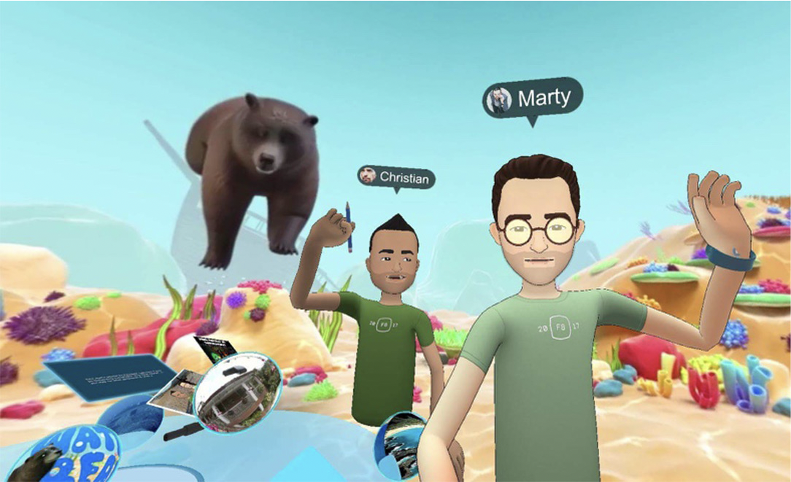
Spaces ukázaly, že intimní prostředí u kulatého stolu funguje lépe než obrovské prázdné haly. Osobní proxemika a oční kontakt jsou klíčové pro psychologickou bezpečnost komunikace.
Od vznášejících se torz k plným tělům s nohama a integraci Face & Eye Trackingu. Senzory v brýlích přenášejí úsměv, mrknutí i směr pohledu v reálném čase.
Ekosystém Meta Horizon dnes reprezentuje největší spotřebitelskou prostorovou platformu propojující sociální kontakt, zábavu a práci.
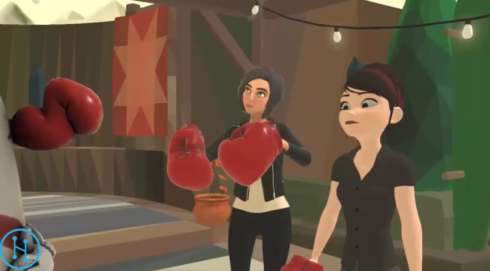
Každé nové médium potřebuje tituly, které jej definují. Stejně jako film, tak i VR potřebovala aplikace, které vyřešily pohyb, interakci a vyprávění.
Průkopnický prostorový animovaný film studia Penrose Studios (2016) volně inspirovaný Andersenovým Děvčátkem se sirkami.
Allumette ukázala cestu dalším oceňovaným VR příběhům: Wolves in the Walls (Emmy za interaktivitu), Madrid Noir či Baba Yaga.
Simulátor pouličního graffiti, který se stal etalonem přesné fyzikální simulace aerosolových sprejů.
Google dnes poskytuje Photorealistic 3D Tiles pro Unity a Cesium for Unreal, což umožňuje komukoliv stavět aplikace nad fotogrammetrickou mapou celého světa.
Rytmická hra vytvořená v Praze autory Janem Ilavským, Vladimírem Hrinčárem a Jaroslavem Beckem, která prodala miliony headsetů po celém světě a byla odkoupena společností Meta.
Beat Saber je důkazem, že pro úspěch ve VR nepotřebujete fotorealistickou grafiku ani otevřený svět. Rozhoduje precizní timing, odezva na setinu sekundy a ergonomická elegance.
První plnohodnotná velkorozpočtová (AAA) hra vytvořená od základů výhradně pro virtuální realitu.
Owlchemy Labs vytvořili metodiku „přirozených rukou“, kde je každá interakce diegetická a nepotřebuje nápovědný text.
Oba tituly ukázaly, že nejlepší VR mechaniky jsou ty, které jsou na 2D obrazovce nepředstavitelné a spoléhají na přirozenou prostorovou inteligenci lidského těla.
Headsety (Meta Quest 3, Apple Vision Pro) snímají reálný svět stereoskopickými kamerami s vysokým rozlišením a bleskovou latencí (<12 ms).
Revoluční metoda prostorové reprezentace scény pomocí milionů orientovaných 3D Gaussových elipsoidů namísto polygonů.
Natočení 2–3 minut videa z mobilu či dronu $\rightarrow$ Structure from Motion (SfM / COLMAP) $\rightarrow$ optimalizace Gaussových elipsoidů (5–15 minut na GPU) $\rightarrow$ okamžitá interaktivní prohlídka ve VR.
Virtuální prohlídky nemovitostí, přesné digitalizace archeologických vykopávek, virtuální produkce pro film (VFX) a fotorealistické tréninkové polygony pro záchranáře.
Konec přepínání kontextů (Alt+Tab). Uživatel si může v prostoru uspořádat úlohy podle mentálních modelů: komunikaci vlevo, kód uprostřed, dokumentaci vpravo a 3D model na stole.
VR eliminuje vizuální ruch okolního světa a vytváří hluboký stav soustředění (flow state), ideální pro komplexní inženýrské a lékařské úlohy.
Až 30 % populace je citlivých na kinetózu. Aplikace musí vždy nabízet volbu: teleport vs. plynulý posun, trhané otáčení (snap turn) po 45° a volitelné zúžení zorného pole (FOV vignetting).
Přístupný design není kompromis na úkor zážitku – naopak, volitelná nastavení výšky a pohodlného dosahu ocení po hodině práce v headsetu každý zdravý uživatel.
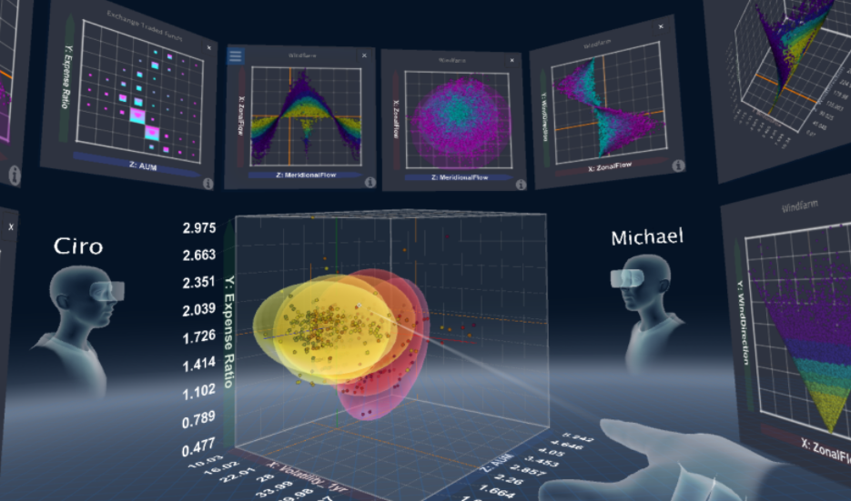
Propojení VR s internetem věcí (IoT), platformou NVIDIA Omniverse a otevřeným standardem OpenUSD umožňuje vytvářet živá digitální dvojčata celých továren a elektráren se senzory v reálném čase.
„Nejlepší VR aplikace jsou ty, které se nesnaží napodobit počítačový monitor, ale vytvářejí nový smysluplný svět s vlastními pravidly.“
| Oblast | Hardware / Standard | Přidaná hodnota | Klíčová výzva |
|---|---|---|---|
| Vzdělávání | Standalone 6DoF (Quest / ClassVR) | Masová dostupnost, 4× rychlejší učení | Délka relace 10–15 min, didaktika |
| Medicína | Projekce / Headset + LLM AI | Bezpečný trénink chyb, objektivita | Přirozený dialog, haptika |
| LBE Zábava | Wireless Standalone + Wi-Fi 6E | Pasivní haptika, hyper-realita | Vysoké nájmy hal, propustnost arén |
| Design / CAD | 6DoF ovladače + OpenXR / Cloud | Měřítko 1:1, bimanual UI, NURBS | Přesnost vstupů, export do CAD |
| Sociální XR | Face & Eye tracking + Spatial Audio | Pocit přítomnosti, neverbální řeč | Moderace, soukromí, toxické chování |